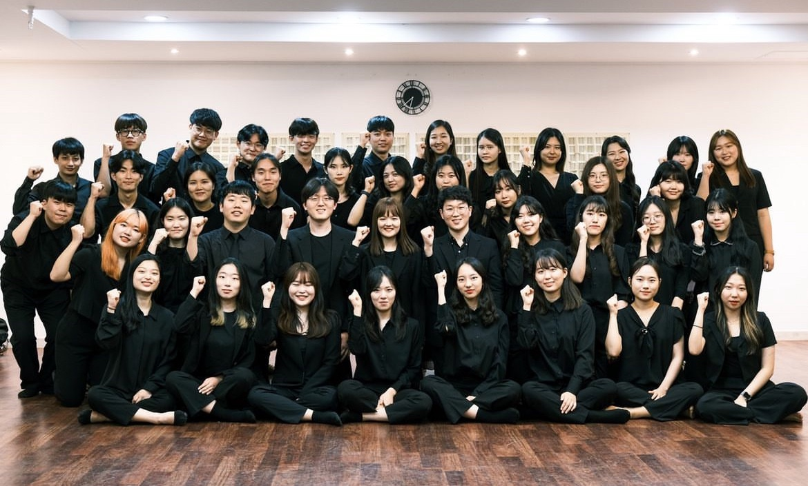
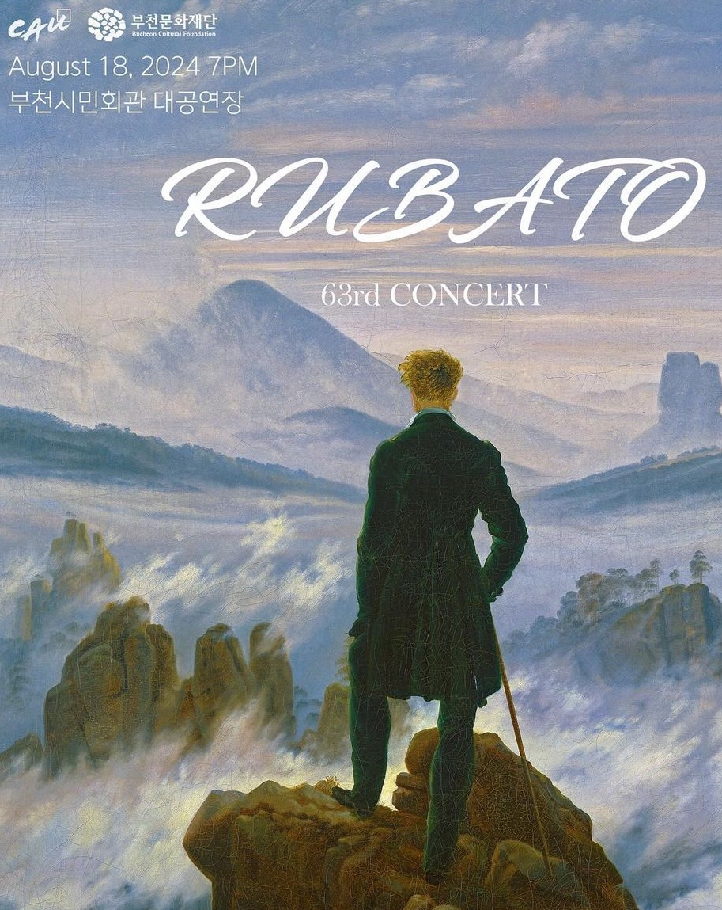
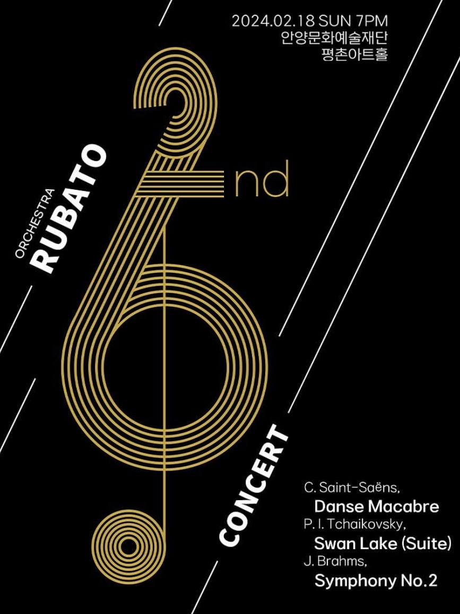
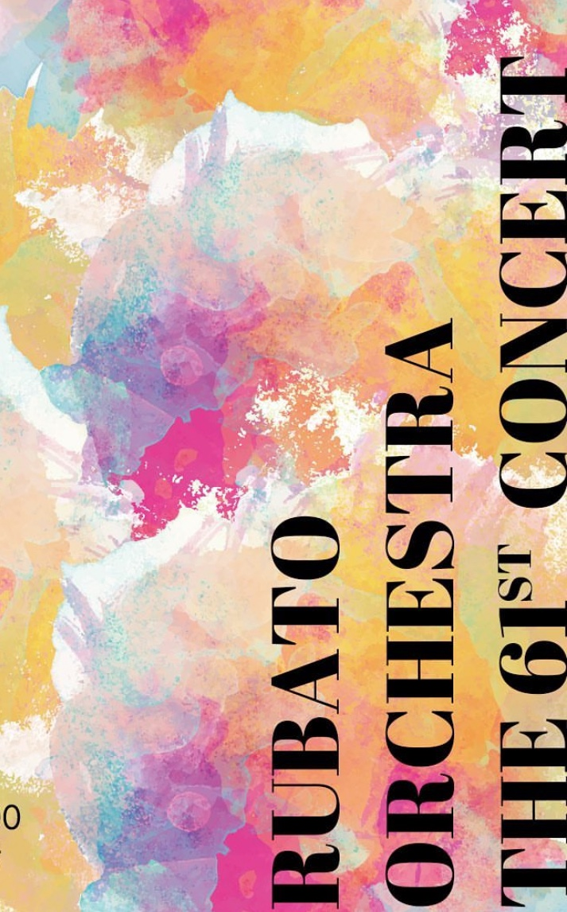
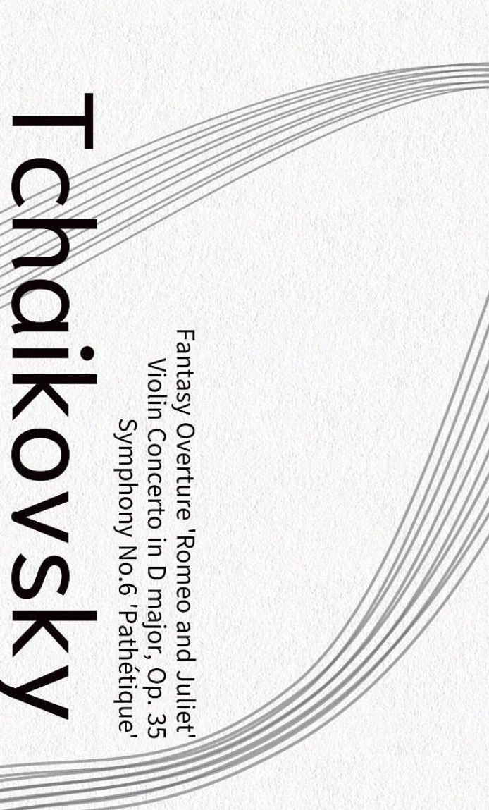
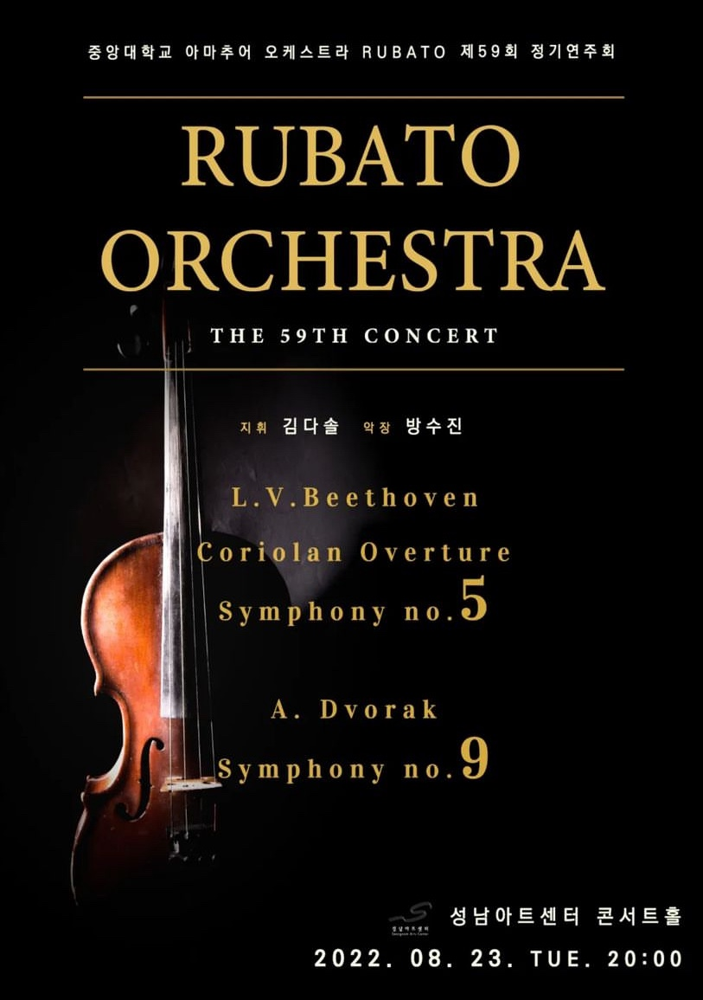

“자유로운 음악적 해석과 조화를 상징하는 오케스트라 동아리"
중앙대학교 아마추어 오케스트라 루바토(Rubato)는 1985년에 창단된 클래식 음악 동아리로,
음악을 사랑하는 학생들이 모여 함께 연주하며 성장하는 공간입니다.
‘루바토’는 독주자나 지휘자의 재량에 따라 템포를 의도적으로 조정하여 빠르거나 느리게 연주하는 음악 용어로,
자유로운 음악적 해석과 조화를 상징합니다.
전공과 관계없이 누구나 참여할 수 있는 열린 동아리로,
초보자부터 숙련자까지 함께 연주하며 각자의 실력을 발전시킬 수 있는 기회를 제공합니다.
매년 정기 연주회와 다양한 공연을 통해 클래식 음악의 깊이를 전달하며,
단원들은 팀워크를 통해 하나의 선율을 완성합니다.
단순히 연주를 넘어 진정한 화합과 성장의 가치를 추구합니다.
루바토는 클래식 음악의 아름다움을 탐구하며,
음악을 사랑하는 모든 이들에게 열려 있는 동아리입니다.
“자유로운 음악적 해석과 조화를 상징하는 오케스트라 동아리"
중앙대학교 아마추어 오케스트라 루바토(Rubato)는 1985년에 창단된 클래식 음악 동아리로,
음악을 사랑하는 학생들이 모여 함께 연주하며 성장하는 공간입니다.
‘루바토’는 독주자나 지휘자의 재량에 따라 템포를 의도적으로 조정하여 빠르거나 느리게 연주하는 음악 용어로,
자유로운 음악적 해석과 조화를 상징합니다.
전공과 관계없이 누구나 참여할 수 있는 열린 동아리로,
초보자부터 숙련자까지 함께 연주하며 각자의 실력을 발전시킬 수 있는 기회를 제공합니다.
매년 정기 연주회와 다양한 공연을 통해 클래식 음악의 깊이를 전달하며,
단원들은 팀워크를 통해 하나의 선율을 완성합니다.
단순히 연주를 넘어 진정한 화합과 성장의 가치를 추구합니다.
루바토는 클래식 음악의 아름다움을 탐구하며,
음악을 사랑하는 모든 이들에게 열려 있는 동아리입니다.





1985 중앙대학교 RUBATO 창단
2022 제 58 · 59회 정기연주회
2022.02.27 지휘 | 강성우 악장 | 한동완 악장 | 강승연
2022.08.23 지휘 | 김다솔 악장 | 방수진
2023 제 60 · 61회 정기연주회
2023.03.01 지휘 | 김강욱 악장 | 김연주 악장 | 윤나영
2023.08.18 지휘 | 문정민 악장 | 전보미
2024 제 62 · 63회 정기연주회
2024.02.18 지휘 | 문정민 악장 | 윤희서
2024.08.18 지휘 | 문정민 악장 | 백솔미 악장 | 박제민